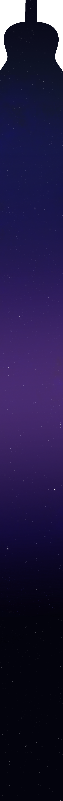

1st
송채원 (24 도공): 1파트 화이팅
유한송 (24 산림) : 나 화이팅
2nd
최주혁 (24 중경): 뭐
허건영 (24 전자): 과가 어디드라
3rd
한정원 (22 법학): 3파트 화이팅
국지환 (24 소융): 나 자신 화이팅
4th
박하늘 (21 전자): 하늘이 과가 어디지
김채연 (24 국통):
정동현 (24 건설):
송채원 (24 도공): 1파트 화이팅
유한송 (24 산림) : 나 화이팅
2nd
최주혁 (24 중경): 뭐
허건영 (24 전자): 과가 어디드라
3rd
한정원 (22 법학): 3파트 화이팅
국지환 (24 소융): 나 자신 화이팅
4th
박하늘 (21 전자): 하늘이 과가 어디지
김채연 (24 국통):
정동현 (24 건설):
- Ensemble │ 지휘자 없는 앙상블
지현석 (23 소융): 나 김현민인데
박하늘 (21 전자): 아 하늘이 과가 어디지
한정원 (22 법학): 애들 과 외우기가 어렵네
송윤종 (24 물리): 기억할게
박하늘 (21 전자): 아 하늘이 과가 어디지
한정원 (22 법학): 애들 과 외우기가 어렵네
송윤종 (24 물리): 기억할게
- Quartet │ 1234 Quartet
이서현 (20 국문): 나 김현민인데
권순규 (22 소융): 아
송채원 (24 도공): 뭐
유한송 (24 산림): 과를 알았다
권순규 (22 소융): 아
송채원 (24 도공): 뭐
유한송 (24 산림): 과를 알았다
- Quartet │ 수상할 정도로 북을 좋아하는..
이서현 (20 국문): 나 김현민인데
이다경 (20 한역): 나 이가현인데
이재원 (20 소융): 나 황희성인데
조인영 (20 한역): 나 뭔데
이다경 (20 한역): 나 이가현인데
이재원 (20 소융): 나 황희성인데
조인영 (20 한역): 나 뭔데
- Quartet │ Prelude No.20
김현민 (23 미광): 나 김현민인데
이가현 (22 소융): 나 이가현인데
황희성 (19 중경): 나 황희성인데
이가현 (22 소융): 나 이가현인데
황희성 (19 중경): 나 황희성인데
- Trio │ 헌내기들
Review
꽃날(flower day)은 서정적이고 부드러운 멜로디가 특징으로, 한국적인
정서를 담은 애잔하면서도 따뜻한 선율이 인상적입니다. 곡 전체가
잔잔하면서도 점차 감정을 고조시키는 흐름을 통해 마치 봄날 꽃잎이
흩날리는 듯한 서정적인 분위기를 자아냅니다.
클래식 기타 앙상블을 위해 편곡되어 원곡의 풍부한 감성을 새롭게 담아냈습니다. 이 편곡에서는 현악기 대신 클래식 기타의 따뜻하고 깊이 있는 선율을 통해 곡의 아름다움을 표현하려 노력했습니다. 현악기와는 다른 클래식 기타만의 부드럽고 섬세한 음색이 돋보이며, 이를 통해 꽃날의 서정적인 멜로디를 새롭게 감상할 수 있습니다.
클래식 기타 앙상블을 위해 편곡되어 원곡의 풍부한 감성을 새롭게 담아냈습니다. 이 편곡에서는 현악기 대신 클래식 기타의 따뜻하고 깊이 있는 선율을 통해 곡의 아름다움을 표현하려 노력했습니다. 현악기와는 다른 클래식 기타만의 부드럽고 섬세한 음색이 돋보이며, 이를 통해 꽃날의 서정적인 멜로디를 새롭게 감상할 수 있습니다.
꽃날 (Flower Day, 황진이OST) - 서웅석
1st
24 송채원, 24 유한송
2nd
24 최주혁, 24 허건영
3rd
22 한정원, 24 국지환
4th
21 박하늘, 24 김채연, 24 정동현
Mento 22 권순규
24 송채원, 24 유한송
2nd
24 최주혁, 24 허건영
3rd
22 한정원, 24 국지환
4th
21 박하늘, 24 김채연, 24 정동현
Mento 22 권순규
- Ensemble
이 곡은 ‘오케스트라를 위한 모음곡’ 중 7번째 곡이며, “왈츠 2번” 혹은
‘쇼스타코비치 왈츠’로 널리 알려졌습니다. 이름에서 알 수 있듯, 이 곡은
전통적인 왈츠의 형태를 따라 듣는 이에게 경쾌하고 활동적인 감상이 들게끔
합니다. 본디 오케스트라 곡인 만큼 다양한 소리의 구성을 통해 듣는 이에게
풍부함을 전하고, 메인으로 나오는 멜로디를 전환하며 흐름이 지루해지지
않도록 하는 것이 특징입니다. 이런 분위기를 클래식 기타만의 소리로
구현하였으니, 원곡과의 차이점 혹은 유사점을 생각하며 감상하시면 재밌을
것입니다.
“Austin Tango”는 “Tango en Skäi”로 유명한 롤랑 디앙의 기타 콰르텟
곡입니다. 베이스의 피치카토 워킹을 서두로 어두운 곡조를 통해 음산한
분위기가 만들어집니다. 순간의 갑작스러운 박수 소리가 청중의 주의를
집중시키며, 멜로디와 불안정한 화음은 곡을 독특한 느낌으로 자아냅니다.
이후 비교적 부드럽고 따듯한 분위기를 지나 서두의 베이스 워킹으로 돌아와
더욱 강한 분위기를 끌어내며 곡이 마무리됩니다. 모든 파트들이 맡은 역할의
조화와 각자의 역량에 집중하여 들어주시면 좋은 감상을 이어나갈 수
있습니다.
Waltz II from Suite for Variety Orchestra
- Dimitri Shostakovich
- Dimitri Shostakovich
Austin Tango
- Roland Dyens
- Roland Dyens
23 지현석, 21 박하늘, 22 한정원, 24 송윤종
- Quartet
차이콥스키(P. I. Tchaikovsky)의 호두까기 인형 모음곡 중 꽃의 왈츠(Valse
des fleurs)는 아름다운 선율과 풍부한 오케스트레이션이 특징입니다. 이
곡은 마법과 환상적인 분위기를 자아내며, 무도회의 우아함과 꽃이 피어나는
장면을 연상시키는 듯한 화려한 왈츠 리듬이 돋보입니다. 특히 곡이 진행되며
서정적이고 경쾌한 분위기가 절정을 이루어 청중에게 따뜻한 감동을
선사합니다.
Nutcracker Suite, Op.71a 8. Waltz of the Flowers(꽃의 왈츠)
- P. I. Tchaikovsky
- P. I. Tchaikovsky
프랑스 작곡가 프랑수아 클레앙장(F. Kleynjans)의 Les 4 point cardinaux는
‘네 개의 방위’를 주제로 한 곡으로, 각 방향의 특색과 상징성을 음악적으로
표현합니다. 이번 신입생 연주회에서는 그중 1악장인 ‘북’을 연주하며, 차분하면서도 깊이있는 울림을 통해 북쪽의 냉정하고 고요한 분위기를 전합니다. 서정적인 멜로디와 묵직한 여운을 즐기실 수 있습니다.
표현합니다. 이번 신입생 연주회에서는 그중 1악장인 ‘북’을 연주하며, 차분하면서도 깊이있는 울림을 통해 북쪽의 냉정하고 고요한 분위기를 전합니다. 서정적인 멜로디와 묵직한 여운을 즐기실 수 있습니다.
I. Nord of Les 4 Points Cardinaux(4개의 방위)
- Francis Kleynjans
- Francis Kleynjans
20 이서현, 22 권순규, 24 송채원, 24 유한송
- Quartet
쇼팽의 프렐류드 21번 B-flat 장조는 그의 전주곡 중에서도 차분하고
감미로운 선율이 돋보이는 작품입니다. 느리고 고요한 템포 속에서 부드럽게
흐르는 선율은 마치 서정시를 연상시키고, 화음을 통해 감정을 섬세하게
나타냈습니다. 쇼팽 자신이 처한 불안과 고독 속에서 평온과 안식을
추구했으며, 이 곡은 그러한 쇼팽의 마음을 담아내고 있습니다.
Prelude in B flat major Op. 28 No. 21
– Frédéric Chopin
– Frédéric Chopin
쇼팽의 프렐류드 15번 D-flat 장조, '빗방울 전주곡'으로 잘
알려진 이 곡은, 지붕 위로 떨어지는 빗방울 소리를 음악으로 표현한
작품입니다. 이 곡에는 당시 쇼팽이 처한 불안과 고독감이 담겨있으며,
빗방울처럼 반복되는 음형이 이 곡의 가장 큰 특징입니다. 평화로운 장조의
선율과 강렬한 단조의 교차는 그의 감정 변화와 고요 속 내면적 갈등을
섬세하게 그리고 있습니다.
Prelude in D flat major Op. 28 No. 15 (Raindrop)
– Frédéric Chopin
– Frédéric Chopin
20 이서현, 20 이다경, 20 이재원, 20 조인영
- Quartet
Claude Bolling의 "Irlandaise"는 재즈와 클래식이 조화를 이룬
곡으로, 밝고 경쾌한 리듬이 특징이며 자유롭고 활기찬 분위기를 더욱 풍성한
사운드로 느낄 수 있습니다.
Irlandaise
– Claude Bolling
– Claude Bolling
Justin Hurwitz의 "City of Stars"는 영화 "La La
Land"의 ost로, 잔잔하면서도 낭만적인 멜로디와 서정적인 가사가
어우러진 곡입니다. 사랑과 꿈을 그린 영화의 감성을 클래식 기타 연주로
감미롭고 은은하게 느낄 수 있습니다.
City of Stars (LaLa Land OST)
– Justin Hurwitz
– Justin Hurwitz
23 김현민, 19 황희성, 22 이가현
- Trio
Program

안녕하세요. 필뮤즈 2024년도 회장 23학번 지현석입니다. 오늘 신입생 연주회에
함께해주신 모든 분들께 진심으로 감사의 인사를 드립니다.
지난 50주년 기념 연주의 감동이 여전히 마음속에 남아있는 지금, 다시 이렇게 신입생 연주회로 여러분을 모시게 되어 기쁩니다. 이번 신입생
연주회는 2018년도 이후 처음으로 마련된 무대로, 특별히 저희 필뮤즈의 귀엽고 열정 가득한 신입생들이 주인공이 되어 준비한 자리입니다. 다소 부족한 부분이 있더라도 따뜻하게 지켜봐 주시면 감사하겠습니다. 오늘 찾아주신 모든 분들께서 즐겁고 특별한 추억을 만들어 가시기를 바라며, 바쁜 일정 속에서도 귀한 시간 내어주신 여러분께 다시 한번 깊은
감사의 말씀을 드립니다.
지난 50주년 기념 연주의 감동이 여전히 마음속에 남아있는 지금, 다시 이렇게 신입생 연주회로 여러분을 모시게 되어 기쁩니다. 이번 신입생
연주회는 2018년도 이후 처음으로 마련된 무대로, 특별히 저희 필뮤즈의 귀엽고 열정 가득한 신입생들이 주인공이 되어 준비한 자리입니다. 다소 부족한 부분이 있더라도 따뜻하게 지켜봐 주시면 감사하겠습니다. 오늘 찾아주신 모든 분들께서 즐겁고 특별한 추억을 만들어 가시기를 바라며, 바쁜 일정 속에서도 귀한 시간 내어주신 여러분께 다시 한번 깊은
감사의 말씀을 드립니다.
Intro

2023.03.25 제 32회 신입생 환영 연주회
2023.09.16 제 55회 가을정기 연주회
2024.03.23 제 33회 신입생 환영 연주회
2024.09.28 창립 50주년 기념 가을정기 연주회
2023.09.16 제 55회 가을정기 연주회
2024.03.23 제 33회 신입생 환영 연주회
2024.09.28 창립 50주년 기념 가을정기 연주회
Today
2024.11.30 2024 신입생 연주회
2024.11.30 2024 신입생 연주회

1974.04.20. 창립
1974.05.29. 제 1회 정기연주회 “클래식의 여울”
1975.06.12. 제 2회 정기연주회 “클래식의 여울”
1975.09.24 자선 음악회
1976.05.01 제 4회 정기연주회 "클래식의 여울"
1976.10.18 전시회 음악회
1977.05.24 제 5회 정기연주회 "클래식의 여울"
1974.05.29. 제 1회 정기연주회 “클래식의 여울”
1975.06.12. 제 2회 정기연주회 “클래식의 여울”
1975.09.24 자선 음악회
1976.05.01 제 4회 정기연주회 "클래식의 여울"
1976.10.18 전시회 음악회
1977.05.24 제 5회 정기연주회 "클래식의 여울"
History